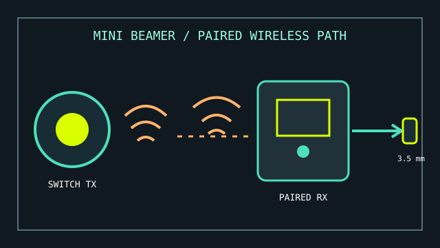

[ SWITCH ACCESS // TRANSMITTER + RECEIVER ]
AbleNet Mini Beamer
A compact wireless switch system using a Mini Beamer transmitter and compatible AbleNet receiver.

MODEL IDENTIFICATION: Mini Beamer transmitter / receiver system. Confirm whether the inventory unit is a transmitter, receiver, or complete set; parts are not interchangeable wireless protocols by assumption.
Model specifications
| Catalog leaf | Adaptive and switch-access controls |
|---|---|
| Exact model / identifier | AbleNet Mini Beamer wireless transmitter and compatible receiver; the exact package and revisions should be checked from labels. |
| Mechanism and primary specifications | Touch-activated wireless switch transmitter; a matched AbleNet wireless receiver converts its signal to a switch closure at the receiver output. |
| Host interface and compatibility | The receiver must be paired with the Mini Beamer and connected to a device or computer interface that accepts a compatible 3.5 mm switch input. The transmitter itself does not directly connect to a computer over USB or Bluetooth. |
| Revision identification | Log transmitter and receiver identifiers, pairing status, output lead, battery condition, and any switch-interface mode. |
Compatibility, setup & limitations
- A compatible receiver is required; Mini Beamer transmission is not a universal Bluetooth switch link and will not pair directly with unrelated wireless receivers.
- The receiving device must expose a switch jack or a suitable downstream switch interface. A 3.5 mm connector alone does not guarantee the right electrical function or scanning configuration.
- Wireless operation is vulnerable to depleted batteries, distance, obstructions, and radio interference. Verify activation at the expected seating position rather than assuming the nominal range.
- One switch closure provides a single switch event; scanning behavior and the resulting action are controlled by the host or attached access device.
Preservation and service
Keep transmitter/receiver as a labeled pair, inspect the output plug and battery compartment, and document successful pairing before removing cells for storage.
Do not mix the Mini Beamer transmitter with different AbleNet product-family receivers without explicit documentation of compatibility.
Manufacturer sources
- AbleNet — Mini Beamer transmitter quick-start guide (PDF)Manufacturer pairing and receiver requirements.
- AbleNet SupportHub — Getting started with the wireless receiverReceiver pairing and switch-output context for AbleNet wireless access systems.